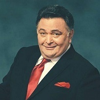

Rishi Kapoor
(4 September 1952 – 30 April 2020)
Rishi Raj Kapoor was an Indian actor, film director and film producer who worked in Hindi films. He has received several accolades, including winning four Filmfare Awards, three Zee Cine Awards and a National Film Award. Kapoor is considered one of the most successful actors in the history of Bollywood.

The following list is a time line of Rishi Kapoor's Life:
- 1952 - Born in Matunga, Bombay, India.
- 1955 - Around the age of three, Kapoor's first on-screen appearance was a cameo in his father Raj Kapoor's film Shree 420.
- 1970 - He made his debut, as an adolescent, in his father Raj Kapoor's film Mera Naam Joker.
- 1973 - As an adult, his first lead role was opposite Dimple Kapadia in the teen romance Bobby.
- 1974 - He won Filmfare Award for Best Actor for Bobby.
- 1974 - Kapoor worked with actress Neetu Singh for the first time in Zahreela Insaan.
- 1982 - In a role considered as one of his best works, Kapoor played an idealistic Devdhar in the 1982 film Prem Rog.
- 1985 - Another highlight of his career, was Saagar in 1985, directed by noted director Ramesh Sippy, which saw Kapoor reunite with Dimple Kapadia after 12 years.
- 2008 - He was honoured with the Filmfare Lifetime Achievement Award.
- 2010 - For his performance in Do Dooni Chaar, he won the Filmfare Critics Award for Best Actor.
- 2016 - For his role in Kapoor & Sons, he won the Filmfare Award for Best Supporting Actor.
- 2018 - After two decades, he had his on-screen reunion with actor Amitabh Bachchan in 102 Not Out.
- 2018 - He appeared in the Netflix drama Rajma Chawal and was critically acclaimed for his portrayal of a Muslim in Mulk.
- 2019 - His final film appearance was in the suspense thriller The Body.
Read more about Rishi Kapoor on Wikipedia.